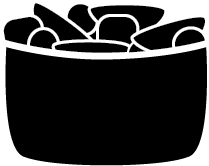

Serves 4

Creamy Friut Salad
- In a large bowl, combine the oranges, peaches, pineapple and marshmallows.
- In a small bowl, beat the cream cheese, yogurt and sugar until smooth.
- Pour over fruit and toss to coat. Refrigerate for 15 minutes.
What we'll need
- 1 can (11 ounces) mandarin oranges, drained
- 1 can (8-1/4 ounces) sliced peaches, drained
- 1 can (8 ounces) pineapple chunks, drained
- 1 cup miniature marshmallows
- 4 ounces cream cheese, softened
- 1/2 cup plain yogurt
- 1/4 cup sugar